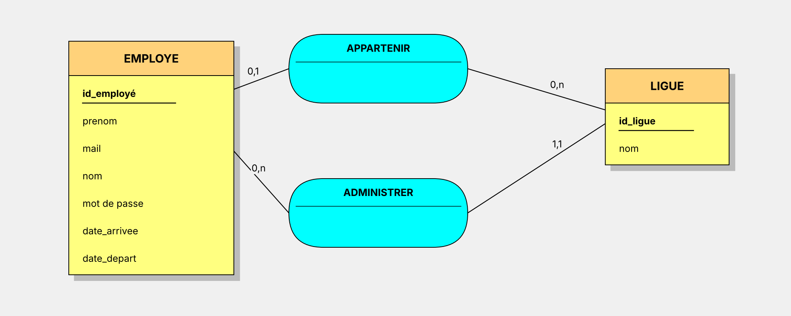
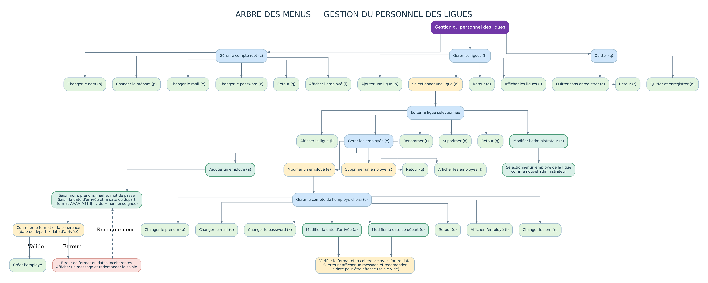

Bienvenue sur l'application de gestion des employés M2L.
C'est une application qui sert à la mise en place de niveaux d'habilitation avec architecture 3-tiers, grâce à une base de donnée.
Voici le travail à faire : Itération 1
- Représenter le graphique des menus en ligne de commandes
- Création du MCD de la base de donnée
- L'ajout des dates d'arrivés pour les employés
Itération 2:
- Script des créations de tables
- Sélection des employés
- Mettre à jour les administrateurs et la saisie des dates en ligne de commandes
Langages utilisés :
- PHP (Eclipse), Looping (MCD), PhpMyAdmin, Github et Github Desktop
Arbre et MCD :

